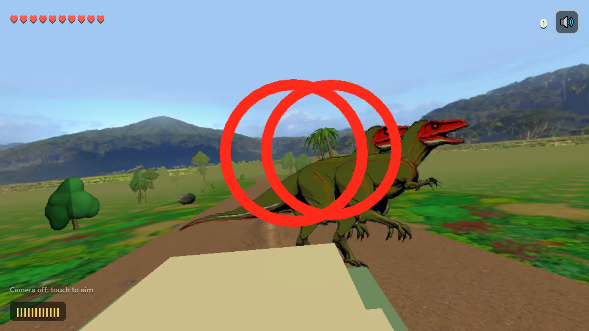
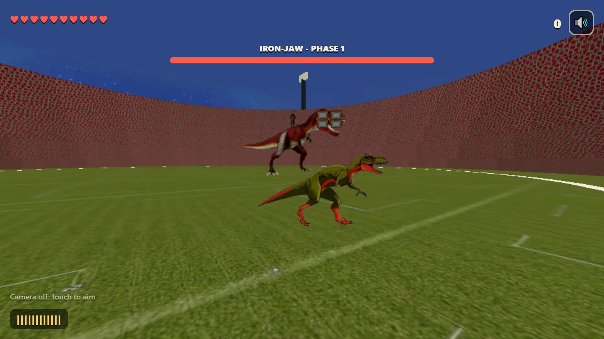
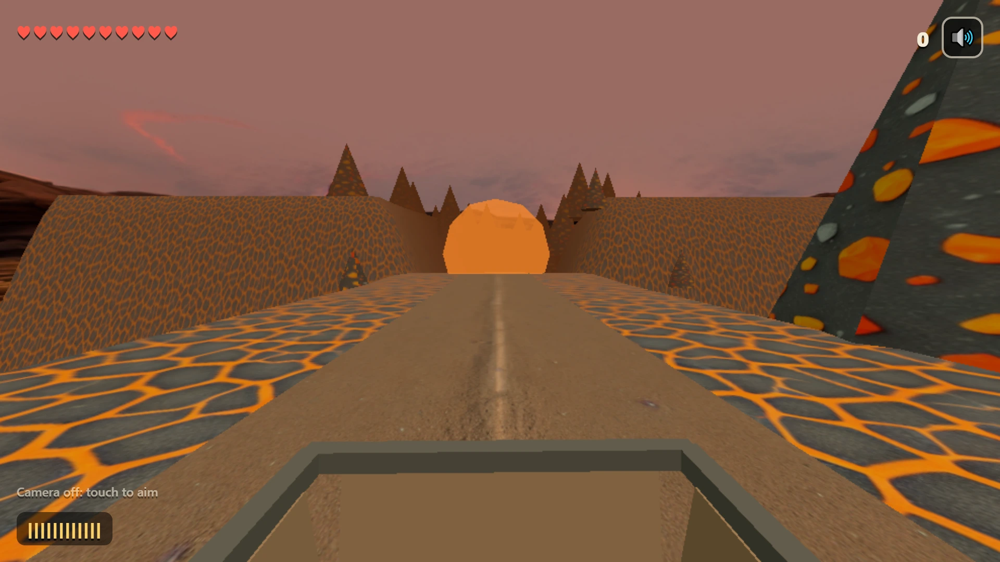

Rex Rampage — a dinosaur shooter you aim with your raised hands
Rex Rampage is an on-rails dinosaur shooter that runs in your browser, and you aim it with your raised hands in front of the camera. The ride moves by itself, so your only job is to point at whatever is coming for you. It is free, with nothing to download and no account, and a stage takes two or three minutes on a phone or a laptop.


You aim, the gun fires
Step back until the camera can see your upper body, then raise your hands. Each raised hand holds a gun and its crosshair follows your arm. If you would rather sit down, a single touch on the screen hands the aiming to your finger. A device with no camera simply starts that way, and a small hint in the corner says which way you are aiming.
The gun in Rex Rampage shoots on its own, six rounds a second, but only when the crosshair sits over something it can hit. There is no aim assist. The crosshair goes where your arm goes and never slides onto a dinosaur for you, so the shooting comes down to how well you move. When the banner tells you to take cover, lower your hands to duck.
The seven stages of Rex Rampage
Rex Rampage has seven stages, and each one moves you differently. You drop in by helicopter on Drop Zone, a short cutscene you can skip. Jungle Road puts you on the back of a jeep with raptors alongside. Visitor Centre is a run on foot, and the gift shop holds people you can rescue by shooting all of their captors. River Canyon is a boat, with pteranodons overhead and a spinosaurus in the water. Volcano Works is a cart ride, with an ankylosaurus and falling rocks you can shoot. Ash Road takes a jeep down the switchbacks of the volcano, with mercenaries firing up from the road below and the T. rex behind you, and it ends in a helicopter. The Stadium is the boss fight, on foot in a ring.
Iron-Jaw, the boss of Rex Rampage
Boss Varga rides the Iron-Jaw T. rex into the stadium, and the fight has three phases. First you strip four armour plates from the jaw while raptors and trikes come flying at you. Then the jaw rig is exposed and the T. rex charges. Put enough hits on the jaw during the warning and it staggers; miss, and the bite costs you two hearts, or one on Easy. In the last phase the T. rex is down and Varga shoots from up on a gantry, and you can knock his rockets out of the air on the way to him.
Easy, Normal and Hard
The game starts on Easy, and Easy is hard to lose: ten hearts, and when they run out you carry on from the same spot, as often as you need. An empty clip of twelve shots reloads by itself in a second.
Normal gives you six hearts and Hard gives you four, with three continues on both. On those two you reload yourself by holding the gun straight up for a second and a half, which is an awkward moment to stop aiming. The game has no menu for this yet, so these two open from their own links on this page: play on Normal or play on Hard.
The camera stays on your device
The camera picture is read on your device to find your hands. Nothing from the camera is sent anywhere. Playing alone, the game talks to no server once it has loaded, and the only thing it remembers is whether you muted the sound, in your own browser.
Solo for now, and what is still rough
The live game is solo. We have built rooms that hold 20 players and tested them on our own machine, but rooms are not switched on, and opening one on the live site says so. This page will change when they are.
Some of the art is unfinished, and we would rather you heard it from us. The raptors, the T. rex, the mercenaries and Boss Varga are painted. Most of the other dinosaurs, the hostages, the gunboat and the enemy helicopter are still plain coloured shapes. If your connection is slow, you will see grey boxes for a few seconds while the textures load. This page is in English only. We keep no count of plays for Rex Rampage on this site, and the game earns no badges and gets no place on your shelf yet.